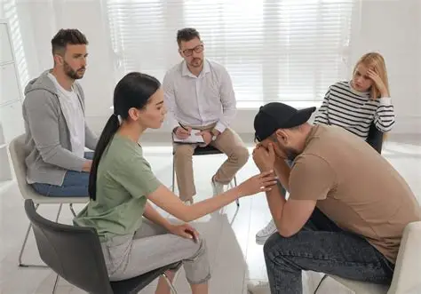

We assist individuals in identifying suitable rehabilitation centres based on their specific needs. Our team provides guidance throughout the admission process and offers continuous support during recovery.
Our counselling services are designed to provide emotional and psychological support. We offer both individual and group sessions, helping individuals understand their challenges and develop coping strategies.
We actively engage with communities through outreach programs that aim to educate and inform. These programs focus on prevention, early intervention, and promoting healthy lifestyles.
Our awareness campaigns are conducted in schools, workplaces, and public spaces. These initiatives aim to increase understanding of addiction and reduce stigma associated with seeking help.
Recovery is a long-term process. Our aftercare programs provide ongoing support to individuals who have completed rehabilitation, helping them maintain sobriety and avoid relapse.
We recognize the impact of addiction on families. Our programs provide guidance, counselling, and support to help families navigate the challenges associated with addiction.
We offer training and development programs to help individuals build essential life skills, improve employability, and successfully reintegrate into society.
